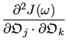
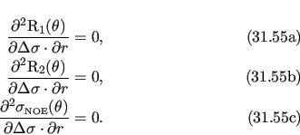
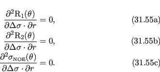

Next: The extended model-free gradient Up: Model-free analysis Previous: The original model-free gradient Contents Index
The model-free Hessian of the original spectral density function (14.62) is the matrix of second partial derivatives. The matrix coordinates correspond to the model parameters which are being optimised.


 =   + +  |
(14.66) |
 = =  -  -  |
(14.67) |
 = =  . . |
(14.68) |
The second partial derivative of (14.62) with respect to the order parameter S2 twice is
 = 0. = 0. |
(14.69) |
 = - . = - . |
(14.70) |
 = - = - |
(14.71) |